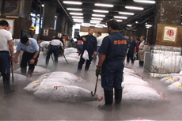

|
TSUKIJI
Allan Sekula | USA 2002 | 43 min.
Format: DVD
Material: MiniDV
Original language: Japanese
Script: Allan Sekula
Camera: Allan Sekula
Editing: Mike Jarmon
Sound: Allan Sekula
Production: Allan Sekula

The world Allan Sekula tracks in his video, Tsukiji -- a day's activity in a large Tokyo fish market -- will invariably revolt the squeamish and delight those who find still-twitching pieces of eel flesh perversely thrilling. But Sekula's not after a gross-out; like his other videos, photographs and writing, the LA-based artist wants to show the intimacies and idiosyncrasies of large-scale consumption. And he's certainly found an apt subject for doing so: by focusing on subtleties (a traffic cop's white gloves, the workers' red gloves) and the massive coldness of it all (the frigid tuna look nothing like fish, but are hacked at and sawed up like lumber), Sekula makes a clear point about the fine craftsmanship behind presumed drudgery. - David Balzer, Eye Weekly
Allan Sekula, born in 1951 in Eire, Pennsylvania. From 1968 until 1972 he studied at the University of California in San Diego. He teaches at the California Institute of Arts in Los Angeles and works in the fields of photography, installation and film. Sekula is one of the most acknowledged contemporary photographers. His works are part of many distinguished art collections as well as exhibitions worldwide, such as Documenta11 (2002) and 12 (2007) and the Biennale in Venice.
Films: Tsukiji 2002 | Gala 2005 | The Lottery of the Sea 2006
back

|